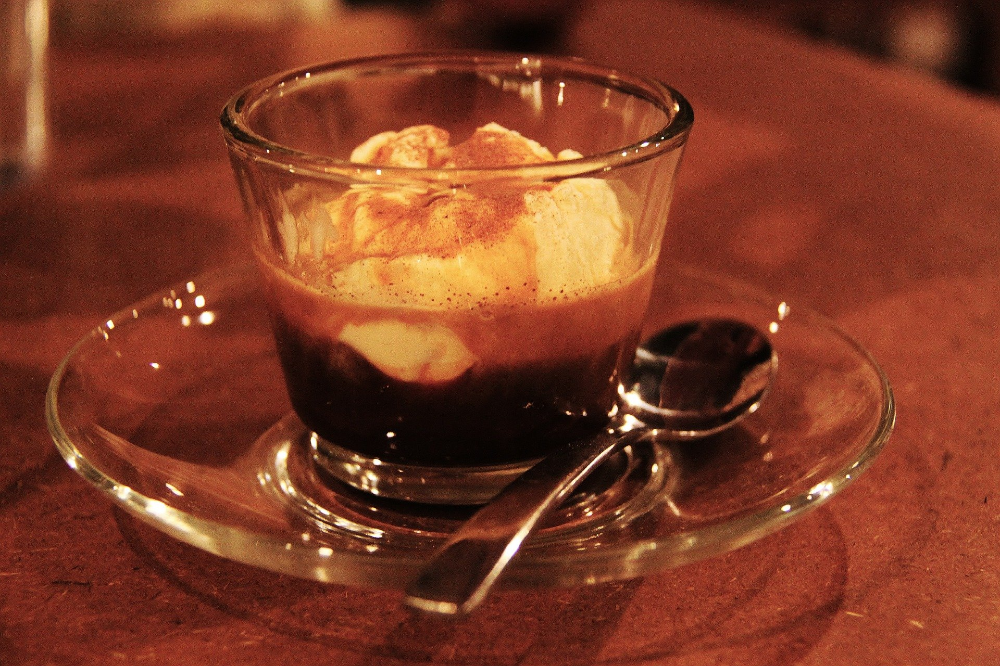

집에서 만들때 쉬운방법
먹는 중간에 아이스크림이 다 녹으면 이미 아포가토보다는 더위사냥스러운 무언가가 되기 때문에, 에스프레소를 중탕하듯이 식히거나 아예 미리 얼음을 넣어 온도를 내리는 방법이 있다. 갓 내린 커피가 아깝다면 아이스크림을 조금씩만 써도 된다.
사용하는 아이스크림과 커피는 기본적으로 개인 취항. 투게더는 물론이고, 엑설런트같은 경우에는 커피 붓기 딱 좋은 적절한 분량과 뛰어난 맛으로 자주 선호된다. 돈 많으면 하겐다즈나 젤라토 아이스크림을 써도 되고, 정통 아포가토는 아니지만 아이스크림이 빠르게 녹는 게 싫다면 콜드브루로 대체할 수도 있어 에스프레소를 고집하지 않아도 상관없다
